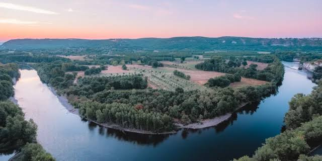

Vallée du Lot
et ses méandres


⟹ Paysage Emblématique du Quercy ⟸
Le Lot prend sa source loin en amont, sur les hauteurs du Gévaudan en Lozère, avant de parcourir près de 485 kilomètres jusqu'à rejoindre la Garonne à Aiguillon. Mais c'est bien dans sa traversée du Quercy, entre Capdenac et Touzac, que la rivière façonne le paysage qui a fini par donner son nom à tout un département.

En entaillant patiemment les causses du Quercy au fil des millénaires, la rivière a creusé d'impressionnantes falaises de calcaire blanc ou ocre, sculptant une succession de boucles serrées qui font aujourd'hui toute la réputation de la vallée. Villages fortifiés, chemins de halage et vignobles se sont installés à l'abri de ces méandres, épousant les courbes tracées par l'eau.
Autour de Cajarc, la « perle de la Vallée du Lot », la rivière enlace le plus petit des quatre causses du Quercy dans un écrin de falaises calcaires. Le village, qui a vu passer des personnalités comme Georges Pompidou et Françoise Sagan, illustre bien cette relation ancienne entre l'homme et le cours d'eau, entre activité batelière disparue et tourisme fluvial contemporain.
La richesse géologique de cette vallée, avec ses grottes ornées, ses phosphatières et ses sites paléontologiques, lui vaut aujourd'hui d'appartenir au Géoparc mondial de l'UNESCO des Causses du Quercy, une reconnaissance qui souligne l'ancienneté et la profondeur de cette histoire écrite dans la roche.
La vallée du Lot doit son relief si particulier à un long travail d'érosion : en s'enfonçant dans les couches calcaires des causses du Quercy, la rivière a créé un paysage karstique riche en grottes, gouffres et phosphatières, aujourd'hui protégé par une réserve naturelle nationale d'intérêt géologique.
Cette réserve, classée en 2015 et gérée par le Parc naturel régional des Causses du Quercy, s'étend sur près de 800 hectares répartis sur une vingtaine de communes riveraines du Lot, de Bach à Saint-Cirq-Lapopie en passant par Cajarc et Cabrerets.
La diversité géologique du site est telle qu'elle attire aussi bien les naturalistes que les paléontologues : phosphatières remplies de sédiments tertiaires, coupes géologiques de référence et sites tectoniques racontent, chacun à leur manière, plusieurs centaines de millions d'années d'histoire de la Terre.
Fréquentation touristique : l'affluence estivale sur les sites les plus emblématiques nécessite une gestion attentive des flux de visiteurs, notamment sur les chemins de halage.
Prélèvement de fossiles : l'extraction et le ramassage de fossiles ou de minéraux sont strictement interdits dans le périmètre de la réserve naturelle géologique.
Qualité de l'eau : la préservation de la rivière et de ses berges reste une condition essentielle au maintien de la biodiversité et des paysages qui font la valeur du site.
Déprise agricole : l'abandon de certaines pratiques agropastorales sur les causses environnants entraîne une fermeture progressive des milieux ouverts.
Les plus beaux panoramas sur les méandres se méritent souvent depuis les hauteurs, mais la vallée se laisse aussi découvrir au ras de l'eau, au fil des chemins de halage et des routes de crête.
Le belvédère de Cajarc offre une vue d'ensemble sur la boucle que la rivière dessine autour du plus petit causse du Quercy.
Le chemin de halage de Bouziès permet de longer le pied des falaises jusqu'à Saint-Cirq-Lapopie, entre bas-relief sculpté et reflets de l'eau.
Les sites de la réserve géologique, comme les phosphatières du Cloup d'Aural ou la Plage aux Ptérosaures, sont ouverts à la visite d'avril à octobre.
Une balade en bateau, au départ de Bouziès ou de Cahors, offre une perspective différente et souvent plus spectaculaire encore sur les falaises et les méandres.